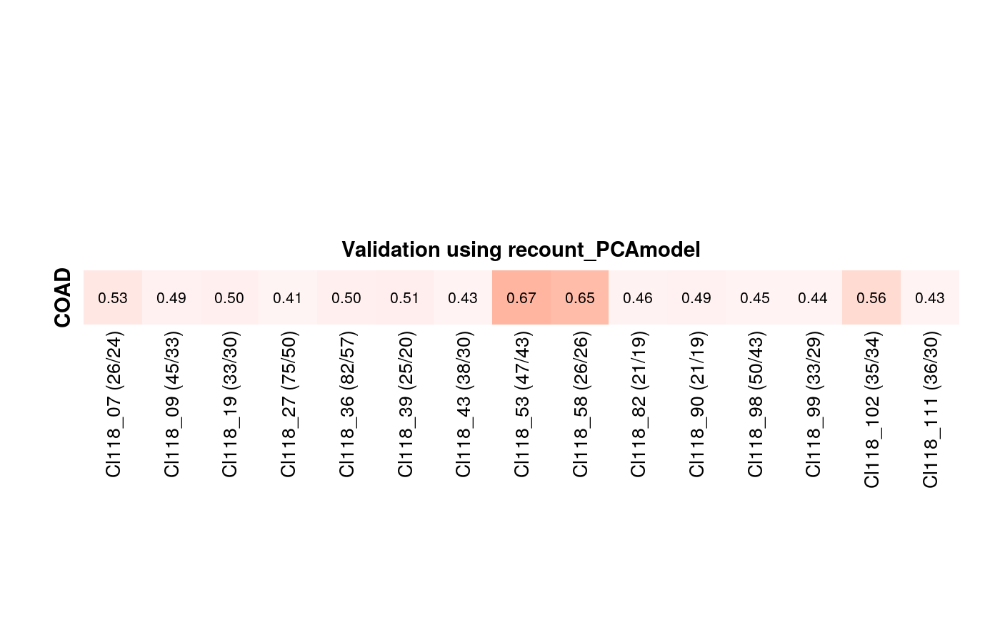

GenomicSignatures.RmdWe buit our signature models using recount2 datasets and there are three different versions available with different annotations.
The PLIER pathways are using prior knowledge/ gene sets provided in PLIER package. The MSigDB versions are annotated with different combination of MSigDB gene sets: c2 includes ‘Canonical Pathways’ and ‘Chemical and genetic perturbations’, c6 is ‘Oncogenic signatures’, and c7 is ‘Immunologic signatures’.
In this vignette, we are using the signature model annotated with the PLIER pathways, from three gene sets (bloodCellMarkersIRISDMAP, canonicalPathways, svmMarkers).
Raw gene expression datasets (= count matrix) need to be pre-processed.
We are using TCGA-COAD RNAseq data from curatedTCGAData as an example here. Pre-processing step is described in the vignette, 05_Pathway_Preservation.
Output from validate is the maximum Pearson correlation coefficient between each signature and the top 8 PCs of the test dataset.
#> Cl118_01 (38/33) Cl118_02 (22/17) Cl118_03 (9/5) Cl118_04 (21/15)
#> 0.27706333 0.19921363 0.09176022 0.03429711
You can plot the heatmap of the validation result using heatmapTable. Here, we selected the signatures with > 0.4 correlation coefficient.
heatmapTable(val[, which(val > 0.4), drop = FALSE],
row_title = "COAD",
column_title = "Validation using recount_PCAmodel",
colors = col)
For example, if you want to check which studies contributed cluster 53, you can use findStudiesInCluster function.
#> [1] "SRP001540" "SRP002079" "SRP003611" "SRP004637" "SRP007461" "SRP014320"
#> [7] "SRP014428" "SRP019994" "SRP024274" "SRP026042" "SRP026126" "SRP026537"
#> [13] "SRP028155" "SRP028594" "SRP029262" "SRP032775" "SRP033725" "SRP039077"
#> [19] "SRP039397" "SRP041036" "SRP042286" "SRP042596" "SRP042620" "SRP047233"
#> [25] "SRP047476" "SRP049340" "SRP050272" "SRP050892" "SRP052740" "SRP056197"
#> [31] "SRP056477" "SRP056696" "SRP057205" "SRP057758" "SRP058856" "SRP061881"
#> [37] "SRP062025" "SRP063493" "SRP063496" "SRP064259" "SRP060355" "SRP036848"
#> [43] "SRP041538"You can assigne scores to an individual samples using calScore. In the following example, each sample (total 524 in this example) is assigned with the scores from all signatures (118 in this example).
#> [1] 524 118#> Cl118_01 (38/33) Cl118_02 (22/17)
#> TCGA-DM-A28G-01A-11R-A16W-07 -6.959946 7.939491
#> TCGA-AA-A004-01A-01R-A00A-07 20.071055 -5.501803
#> TCGA-CK-4950-01A-01R-1723-07 -13.105493 3.748127
#> TCGA-D5-5539-01A-01R-1653-07 -5.265413 2.476548Score result can be displayed in a heatmap format using sampleScoreHeatmap.
sampleScoreHeatmap(score = score[[1]],
dataName = "TCGA_COAD_RNAseq",
modelName = "recount_PCAmodel")You can plot a specific sample.